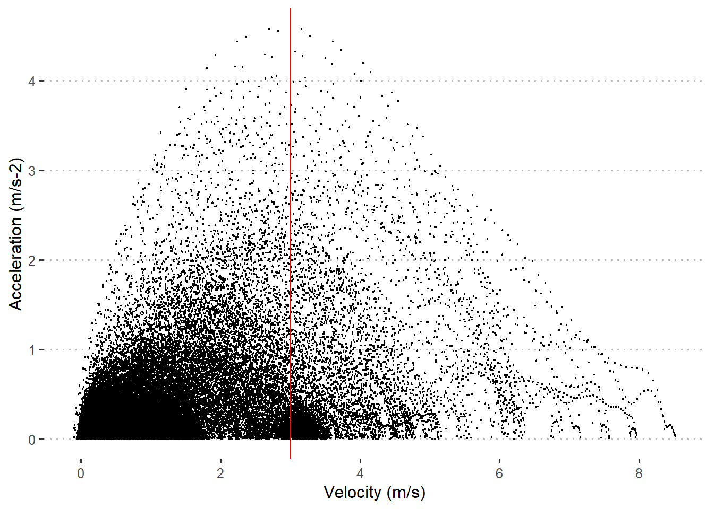

![]()
library(catapultR)
library(tidyverse)
library(lubridate)In Situ Acceleration-Speed Profile
Sport Science
Sprint
R
sdsadasdasd
Introduction
The In Situ Acceleration-Speed (AS) Profile has gained increasing popularity since introduced by JB Morin and team in 2021. Briefly described, the AS profile is in-game recording of the maximal acceleration and speed capabilities based on instantaneous acceleration and speed data from GPS or equivalent tracking devices from multiple training sessions/games. For an in depth overview of the concept, a good place to start is the blogpost or Presentation by JB Morin and/or the following scientific papers:
The simple but tedious way of calculating the AS Profile
Only a few GPS providers allow for the calculation of the AS profile in the cloud using proprietary software, so being able to calculate the AS profile yourself may be valuable. Luckily, this can be simply done by using the web application by Yann Le Mat - all it takes is to upload the raw GPS data as a .csv file.
Although this seems easy enough, several training sessions are needed for a valid and reliable estimation of the AS profile (see linked papers above), thus calculating the AS profile for a whole squad can easily mean that 100-200 .csv files need to be downloaded (typically 1 file per player per session with 30.000-100.000 rows depending on the session duration). This quickly becomes very tedious work!
The easier way using the CatapultR Package and R Studio
Another, and much easier, method (at least if working with Catapult GPS data) is to leverage the power of R and the catapultR package which serves as a wrapper for the Catapult API. This essentially means that no manual downloading of .csv files are needed. Below, I will show you step by step how you can use the CatapultR package to download the raw GPS 10Hz data.
To get started in R Studio, I load the following packages:
…and set a few placeholder variables and the API connection:
#Set player name, and date range for the data of interest
playerName <- name
startDate <- startdate
endDate <- enddate
#Get API Access
sToken <- stoken
sRegion <- sregion
#Setup API connection
token <- ofCloudCreateToken(sToken = sToken, sRegion = sRegion)The next code chunks uses several functions from the CatapultR package to retrieve the raw 10HZ sensor data via the API connection. I use the three parameters (defined above) playerName, startDate, and endDate to specify the data of interest.
I first extract a list of athletes, format the start and end dates, and extract a list of activities in the specified period:
# Get a list of athletes connected to the Token user
athletes <- ofCloudGetAthletes(token)
# Use the playerName to identify the associated athlete id
athletes$player_name <- paste(athletes$first_name, athletes$last_name)
athleteID <- athletes$id[athletes$player_name==playerName]
# Get a list activities from the specified period
from <- as.integer(as.POSIXct(as.Date(startDate, format="%d-%m-%Y")))
to <- as.integer(as.POSIXct(as.Date(endDate, format="%d-%m-%Y")))
activities <- ofCloudGetActivities(token, from = from, to = to)I then create a for loop to loop over the list of activities, and extract activities where the player of interest is present:
# Loop over the activities for the specific athlete to get the 10Hz raw data
# Create output variable as a list using the vector function with length equal to number of activities
rawData <- vector("list", nrow(activities))
# For loop using the ofCloudGetActivitySensorData function which takes the athleteID and an activity as arguments.
#"Try" function suppresses an error in the for loop if the athlete is not part of an activity.
for (i in seq_along(activities)) {try(
rawData[[i]] <- ofCloudGetActivitySensorData(
token,
athlete_id = athleteID,
activity_id = activities$id[[i]],
parameters = c("ts",
"cs",
"lat",
"long",
"xy",
"o",
"v",
"rv",
"a",
"hr",
"pl",
"sl",
"mp",
"pq",
"ref",
"hdop")),
silent = TRUE)
}Now that I have the raw 10Hz sensor data for each activity extracted and in a list, I use the “map” (that applies a function on a list) and “unnest” functions to unnest the gps variables for each activity:
# Map function to unnest the data (gps variables) column across the list.
# "Possibly" function secures that the unnest function does not stop due to error
rawData_list <- rawData %>%
map(possibly(~unnest(data = ., cols = "data"), NULL)) %>%
# Delete empty lists - these are activities where the player of interest has not participated
compact()And finally, I rename the columns and create a few additional time columns (timestamp, seconds, elapsed_time):
# Mutate a time column using lubridate based on ts (epoch), and rename columns
rawData_list <- rawData_list %>% map(~mutate(.data = ., timestamp = as_datetime(.$ts),
seconds = round(cs/100, 1),
elapsed_time = (row_number()-1)/10)) %>%
map(~rename(.data = ., latitude = lat,
longitude = long,
position_x = x,
position_y = y,
velocity = v,
velocity_raw = rv,
acceleration = a,
total_distance = o,
heart_rate = hr,
player_load = pl,
smoothed_load = sl,
metabolic_power = mp,
positional_quality = pq,
number_satelites = ref))To make it easier going forward I wrap it all in a function:
get_raw_data <- function(name, startdate, enddate, stoken, sregion) {
#Add the variables to extract the data of interest
playerName <- name
startDate <- startdate
endDate <- enddate
#Add the variables for the API connection
sToken <- stoken
sRegion <- sregion
token <- ofCloudCreateToken(sToken = sToken, sRegion = sRegion)
#And just copy-paste the above code chunks in here
...
}The final step I need to solve before I can use the function is to identify the sToken and the sRegion (These are text strings used to access your user profile via the API, and can be found in the Catapult Cloud). With that in place, I am ready to collect some raw 10 Hz data by simply adding the parameters to the function:
#I want to get data from Player A in date range 5th to 10th January 2024
data <- get_raw_data(name = "Player A",
startdate = "05-01-2024",
enddate = "10-01-2024",
stoken = "xxx",
sregion = "xxx")The data comes in a list format, with each list representing an activity. For this example, I get 4 activities (training sessions only), which is on the low end for obtaining a reliable AS profile, but that is not the main focus for now.
The raw data looks like this with each row representing 0.1 seconds (sampling rate of 10 Hz) (only a few columns are selected):
| athlete_first_name | velocity | velocity_raw | acceleration | seconds | elapsed_time |
|---|---|---|---|---|---|
| Player | NA | 0.6499864 | NA | 0.0 | 6501.0 |
| Player | NA | 0.6499864 | NA | 0.1 | 6501.1 |
| Player | NA | 0.6499864 | NA | 0.2 | 6501.2 |
| Player | NA | 0.6499864 | NA | 0.3 | 6501.3 |
| Player | NA | 0.6499864 | NA | 0.4 | 6501.4 |
| Player | NA | 0.6499864 | NA | 0.5 | 6501.5 |
| Player | NA | 0.6499864 | NA | 0.6 | 6501.6 |
| Player | NA | 0.6499864 | NA | 0.7 | 6501.7 |
| Player | NA | 0.6499864 | NA | 0.8 | 6501.8 |
| Player | NA | 0.6499864 | NA | 0.9 | 6501.9 |
Dealing with API limits
Because the function tries to pull raw 10Hz GPS data through the Catapult API, it calls a large amount of data. Depending on the date range (determined by startDate and endDate parameters), you may experience that you get fewer than expected activities or simply empty activities. This may even happen if the date range spans 5 days. I reckon this may be due to the API limit of the call. The obvious way to solve this is to repeat the function with different start and end dates until the desired days are covered, and then bind the outputs into a single data frame. However, in the long run, this is not very feasible. A cleaner method is to use the Purr package from the Tidyverse collection to loop over the get_raw_data function using consecutive dates as inputs. In this way, the function runs in small batches and thus overcome the potential issue of reaching the API limit. This is potentially very powerful, so please use it with respect as there is a reason for the API limit set by Catapult. In this specific case, using raw data for the Acceleration-Speed profile, a date range of 7-10 days should be sufficient.
# I first define the date range and sequence of start dates - I use the seq function to
# create consecutive days within the range, and minus by 1,
# since the end date will by the start date + 1
start_dates_list <- seq(dmy("05-01-2024"), dmy("10-01-2024") - 1, by = "days")
end_dates_list <- start_dates_list + 1
# The trick now is to use the map2 function, to loop over combinations of start and end dates
# applying those to the get_raw_data function
data <- map2(start_dates_list, end_dates_list, ~ get_raw_data(
name = "Player A",
startdate = format(.x, "%d-%m-%Y"),
enddate = format(.y, "%d-%m-%Y"),
stoken = stoken,
sregion = sregion
))Essentially what happens in the code is that the get_raw_data function runs five times, starting with a start date of “05-01-2024” and an end date of “06-01-2024”, then a start date of “06-01-2024” and an end date of “07-01-2024”, etc., until having covered the entire date range.
Preparation of the raw data
For the preparation of the speed acceleration data, I use the Signal package and a butterworth filter as outlined in Clavel et al., 2023.
I use the filter on the raw velocity data, as opposed to the velocity data already filtered by Catapult, to secure consistency.
library(signal)
#Set filter details
bf4 <- butter(2, 0.10, type="low")
#Apply filter
rawData_list <- data %>%
#Delete NA's
map(~na.omit(.)) %>%
#Apply filter on raw velocity data across lists
map(~mutate(.data = ., velocity_raw_bw = filtfilt(bf4, .$velocity_raw)))I then calculate instantaneous acceleration based on the filtered velocity data. There are a few ways this can be done. I use a running linear regression with a window of 3. This means that three consecutive velocity observations are used to create a linear regression with the slope of the being the acceleration. It makes the calculation of acceleration a little less sensitive to outliers in velocity data.
library(runner)
library(useful)
rawData_list_acc <- rawData_list %>%
map(~mutate(.data = .,
reg_acc = runner(x = .,
k = 3,
na_pad = FALSE,
f = function(x){
model <- lm(velocity_raw_bw ~ elapsed_time,
data = x)
coefficients(model)[2]})))
# I shift the calculated acceleration column 1 row up since the first value is NA
rawData_list_shifted <- rawData_list_acc %>%
map(~shift.column(data = .,
columns = "reg_acc",
newNames = "acc",
up = TRUE, len = 1))
# Finally, I bind the lists into a single data frame
all_data <- rawData_list_shifted %>%
bind_rows()Inspection of the data
To quickly check that the velocity and acceleration traces make sense, I visualize a snapshot of the traces. It seems to fit (acceleration is the red line).

The second inspection is the scatter plot with acceleration on the y-axis and velocity on the x-axis. This depicts the entire spectrum of instantaneous acceleration-velocity and gives you a good impression on the data quality. E.g. if you see high accelerations towards high velocities you should be concerned. Also the maximum acceleration should typically be found at a velocity of less then 3 m/s.
all_data %>%
ggplot(aes(x = velocity_raw_bw, y = acc)) +
geom_point(size = 0.2) +
ylim(0,NA) +
geom_vline(xintercept = 3, color = "red") +
theme_pubclean() +
xlab("Velocity (m/s)") +
ylab("Acceleration (m/s-2)")
The data looks good, and I proceed to the final step. I use the InSituASProfile package, which I have developed. I first prepare the data using the prepare_data function, which also creates an initial regression line, so that one can decide if it is feasible to proceed to the final calculation. In this case, points are located very close to the regression line with an r-square value of 0.98 and I proceed to the final model model/calculation.
library(InSituASProfile)
# I rename the column as the InSituASProfile package need a "acc" and "speed" column
all_data <- all_data %>%
rename(speed = velocity_raw_bw)
# Prepare data and inition plot
InSituASProfile::prepare_data(all_data, print_plot = TRUE)
The final model can be computed using either the 95 CI or Turkey boxplot method for outlier removal. The 95 CI method is the original method described in Individual acceleration-speed profile in-situ: A proof of concept in professional football players. This method initially fits a regression model, removes points outside of the 95 CI limits, before fitting the final model. The box plot method has recently been described in Comparison of acceleration-speed profiles from training and competition to individual maximal sprint efforts. This method uses the top 2 percent of accelerations for each velocity bin (0.1 m/s), constructs a box plot for each bin, and then removes points outside of the IQR * 1. Subsequently, the final regression model is fitted. By default, InSituASProfile::get_AS_Profile uses the 95% CI outlier detection, but if you want to use the box plot method just set ci_outlier_detection = FALSE.
#Using the 95% CI method
InSituASProfile::get_AS_Profile(print_plot_regression_line = FALSE,
print_AS_plot = TRUE,
ci_outlier_detection = TRUE)
#Using the box plot method
InSituASProfile::get_AS_Profile(print_plot_regression_line = FALSE,
print_AS_plot = TRUE,
ci_outlier_detection = FALSE)